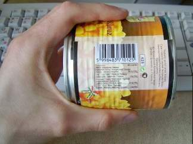

Всем нам свойственно ошибаться, но иногда мы вовремя обнаруживаем свои ошибки. Пусть ты не сможешь умножить в уме 790 г. колбасы на 134 рубля 50 копеек, но если продавщица говорит: «115 рублей, молодой человек», то ты можешь прикинуть (около 120 рублей умножить на 1/4 килограмма будет 30 рублей, 130 минус 30 — сто рублей) и понять, что эта добрая тетя пытается тебя обдурить, присвоив себе десятку.
Компьютеры тоже ошибаются. Сбоит память, на винчестерах появляются бэдблоки, мыши в колодцах грызут телефонные кабели. Так в информацию вносятся ошибки, которые нужно обнаруживать и по возможности исправлять.
Чтобы найти ошибку, к сообщению добавляют контрольную сумму (checksum). В самом простом случае это сумма всех байтов сообщения. Например:
Сообщение: 12 34 56
Контрольная сумма: 12+34+56=102
После передачи в это сообщение могут быть внесены помехи, например, так:
Искаженное сообщение: 12 36 56, контрольная сумма 102
Если теперь сложить байты сообщения, результат не совпадет с контрольной суммой. Так программа может сделать вывод, что данные были повреждены, и принять меры (например, еще раз запросить пакет TCP/IP или выдать сообщение, что архив поврежден).
CRC, или циклический избыточный код, — это улучшенный (и усложненный) вариант контрольной суммы. В этой статье будет рассказано об алгоритме CRC32, который применяется в протоколе TCP/IP, архиваторах Zip и Rar. Затем я расскажу тебе, как защитить свою программу от модификаций, проверяя ее
CRC.
Чем плоха контрольная сумма
Во-первых, если просто складывать байты, то старшие биты будут изменяться реже, чем младшие. То есть, если мы складываем
12 34 56, контрольная сумма 102
12 34 56 23, контрольная сумма 125
12 34 56 23 45, контрольная сумма 170
результат останется в пределах двух сотен. Если контрольная сумма записана в 32-разрядное или 64-разрядное слово, старшие байты будут содержать нули. Это не есть хорошо, так как все биты контрольной суммы должны быть равноценными.
Во-вторых, сообщения с переставленными байтами будут иметь одну и ту же сумму:
12 34 56, контрольная сумма 102
56 12 34, контрольная сумма 102
Несмотря на все эти недостатки, разные варианты контрольной суммы используются довольно широко, например, в штрих-кодах (barcode). У меня в руках банка консервированной кукурузы, на которой написан такой штрих-код:
5 998483 710125

Это код EAN-13 (тринадцать цифр). Правило для его проверки такое: сложи цифры на четных позициях, умножь сумму на три и добавь цифры на нечетных позициях. Должно получиться число, которое делится на десять:
9 + 8 + 8+ 7 + 0 + 2 = 34
5 + 9 + 4 + 3 + 1 + 1 + 5 = 28
34 * 3 + 28 = 130, делится на 10
А чтобы это условие выполнялось, последнюю цифру, 5, делают контрольной суммой. То есть складывают по этим правилам все остальные цифры, а последнюю цифру вычисляют как 10 минус последняя цифра суммы. Контрольная сумма нужна затем, чтобы сканер в супермаркете не считывал неправильный код если упаковка грязная или продавщица случайно закрыла код рукой. Если интересно, можешь проверить по этому правилу штрих-коды на любых упаковках пищевых продуктов (но не книг — у них другой код, ISBN).
Есть очень простой, короткий и быстрый (примерно в 10 раз быстрее CRC) способ подсчета контрольной суммы. Берем по 4 байта из файла, и делаем с ними логическую операцию XOR. То, что получится в результате, — контрольная сумма.
unsigned long XORCount(void* data, size_t bytesread)
// data — сообщение, size_t — его длина
{
*(long*)(data + bytesread) = 0; // Подписать 4 нулевых байта
bytesread /= sizeof(long);
while(bytesread--)
sum ^= *(long*)data, data+=sizeof(long);
// Первые 4 байта XOR вторые 4 байта XOR третьи...
return sum;
}
В этой контрольной сумме все байты используются полностью, среди них нет более значимых или менее значимых. Теоретическая вероятность того, что контрольная сумма окажется правильной для испорченного файла — 1 шанс на 2 ^ 32. Но операция XOR обладает таким свойством, что A XOR A = 0. Поэтому для сообщений
12 34 A6 7B 91 92 93 94 91 92 93 94
12 34 A6 7B 12 34 56 78 12 34 56 78
12 34 A6 7B 00 00 00 00 00 00 00 00
контрольная сумма будет одинаковой, как и для любых других, содержащих четное число одинаковых четверок байт (или же просто 8, 16, 24 или 32 одинаковых байт). И если вместо NOP'ов записать в исполнимый файл нули или любые другие байты (но число байт обязательно кратно 8), то программа этого не обнаружит. Все это плохо, но не смертельно, поэтому этим алгоритмом вполне можно пользоваться, если нужна высокая скорость проверки.
Что такое CRC
Запомни простую формулу: CRC = сообщение % полином
То есть все сообщение (файл, архив) делим по модулю на некоторую константу (ее называют полиномом). Остаток от деления и есть CRC. О том, как весь файл можно разделить на число, я скажу чуть ниже, а пока — урок арифметики. Но не обычной арифметики, а полиномиальной.
Что же это за арифметика такая? Это двоичная арифметика без переносов и заемов. Если сложить 1+1 в обычной двоичной арифметике, получится 10 (переносим единицу). Если вычесть 10–1, получится 1 (занимаем единицу).
В полиномиальной арифметике:
0+0 = 0 0–0=0
0+1 = 1 0–1=1 (не занимаем!)
1+0 = 1 1–0=1
1+1 = 0 (не переносим!) 1–1=0
Видно, что сложение в полиномиальной арифметике — это то же, что и вычитание. И если тебя мучили таблицами истинности на уроках информатики, ты сразу вспомнишь, что это операция XOR. В учебниках по дискретной математике ее обозначают кружком с косым крестиком внутри. Я буду обозначать эту операцию крышкой ^, как в Си.
В полиномиальной арифметике 100 плюс 110 равно 10, но 100 минус 110 тоже равно 10. Нет ни знака, ни определенного порядка битов. Все биты равнозначны, и это очень важное свойство для CRC. Если переставить несколько битов в обоих слагаемых, те же биты будут переставлены в сумме:
1010 ^ 1100=01 10, поменяем местами первые два и последние два бита:
1010 ^ 0011=10 01 (а теперь сравни 19+34=53 и 91+43=134, а не 35).
Биты можно представить как коэффициенты многочлена (полинома). Поэтому арифметику называют полиномиальной, а делитель в алгоритмах CRC — полиномом. В общем, все это математические заморочки, но знать будет не лишнее.
Умножение в полиномиальной арифметике нам не понадобится, а вот о делении нужно сказать подробнее. Делим, как во втором классе, уголком, но вместо вычитания используем операцию XOR:
Сообщение: 1101010
Полином: 101
1101010
^101
====
111010
^101
===
10010
^101
===== получили 0, сдвигаемся на 2 бита
110
^101
===
11
Готово! CRC = 11
Именно так считают CRC. Заметь, что в каждом столбике мы вычитаем старшие биты 1–1=0. В следующих битах могут быть любые числа. Один раз мы получили ноль в старшем бите, и нам пришлось сдвинуться вправо на 2 бита, а не на один. Итак, можно записать такой алгоритм (это не рабочий код, он только показывает алгоритм):
// data - сообщение (битовая строка), POLY - полином
while(length(data) > length(POLY)){
r = TOPBIT(data); // Выделяем старший бит data
data <<= 1; // И выкидываем его из основного числа data
if(r)
data ^= POLY;
}
В столбиках мы сдвигали полином 101 вправо, каждый раз вычитая его из сообщения. В этом алгоритме полином остается на месте, но мы «двигаем» делимое влево. Если старший бит r равен нулю, мы сдвигаемся еще на один бит, не вычитая POLY. Константа POLY равна полиному без старшей единицы, то есть 01. Обрати на это внимание: первую единицу писать незачем, так как двоичное число всегда начинается с единицы.
Как работает этот код, легче понять на примере. Возьмем то же сообщение 1101010 и тот же полином 101 (сравни со столбиком выше):
Шаг 1. r = 1 // Отделили первый бит
data = 101010 // r=1, поэтому делаем XOR
^01
======
111010
Шаг 2. r = 1
data = 11010
^01
=====
10010
Шаг 3. r = 1
data = 0010
^01
====
0110
Шаг 4. r = 0 // XOR не делаем
data = 110
Шаг 5. r = 1
data = 10
^01
==
11
Итак, алгоритм в целом понятен: делим нацело data на POLY, получаем crc. И при делении 0–1=1, 1+1=0 без переноса.
Сложность состоит в том, что сообщение может весить пару мегабайт. Как же разделить его на полином? Заметь, что при каждом проходе цикла у нас меняются только 2 первых бита data. Значит, можно проходить по
всему сообщению, читая в каждый момент времени небольшую порцию данных (в нашем случае — первые два бита).
Как работает табличная реализация
Но у этого алгоритма есть еще один недостаток: он обрабатывает по одному биту сообщения. Например, для мегабайтного файла он сделает 8 миллионов проходов цикла, и каждый раз будет извлекать отдельные биты. Согласись, это никуда не годится!
Есть общепринятый трюк, который ускоряет подсчет CRC чуть ли не в десятки раз. Идея такова: будем обрабатывать по байту за один проход цикла. Когда мы делим байт на полином, у нас в остатке получается некоторое число, причем оно не зависит от других байтов сообщения. Вот это число мы можем хранить в таблице для каждого делимого байта. Имея такую таблицу, будем получать CRC для каждого байта за один проход.
Сейчас я расскажу, как построить такую таблицу и что конкретно в ней будет находиться. Чтобы не маяться с длинными таблицами, возьмем байт, равный 3 битам, и короткий полином 111. Пусть сообщение состоит из 5 бит, назовем их abcde. Пройдем наш старый алгоритм по шагам:
Шаг 1. if(a) // Запись условная, это не рабочий код
bc ^= 11;
Шаг 2. if(b)
cd ^= 11; // Полином 110 без первой единицы
Шаг 3. if(c)
de ^= 11;
Когда мы подсчитали bcd и перешли на второй шаг, бит a уже не нужен, и на дальнейшие подсчеты он никак не влияет. Когда дошли до последнего шага, оказались ненужными биты a и b. А после третьего шага сыграл свою роль бит c, который теперь сходит со сцены.
То, что поменялись биты abc, уже не важно, потому что на четвертом, пятом и так далее шаге они не будут использоваться. Но на этих трех шагах как-то изменились биты de. И изменились они в зависимости от битов abc. Давай переберем все значения abc, начиная с 000 и до 111.
000 (a=0, b=0, c=0) — ни одно из условий не выполняется, поэтому биты def не изменились.
001 (a=0, b=0, c=1) — условие if(c) выполнилось. Я запишу это так:
abc
001def
^11
010 — условие if(b) выполнилось, но после добавления единицы к c выполнилось также if(c). Запишем под чертой результат операции XOR над двумя соответствующими числами в битах de:
abc
010de
^11
^11
==
01
011 — выполнилось условие if(b), но бит c был при этом обнулен, поэтому if(c) не сработало:
abc
011de
^11
==
10
100 — сработало условие if(a), которое вызвало if(b). В результате бит d будет подвергнут операции XOR с единицей (далее будем говорить проще, XOR'ится с единицей):
abc
100de
^11
^11
==
10
101 — аналогично, но бит c обнулился, и результат — нулевой:
abc
101de
^11
==
00
То же самое ты можешь написать для 110 и 111. Довольно муторное дело, но в нем нет ничего сложного. Сделаем массив T с индексами от 000 до 111, в котором будем хранить результаты наших вычислений:
индекс значение
000 00
001 11
010 01
011 10
100 10
101 00
110 11
111 00
Теперь рассчитать CRC можно, что называется, в два притопа, три прихлопа. Смотри:
de ^= t[abc]; // Код условный, не рабочий.
gh ^= t[def]; // t — массив, abc def ghi — сообщение
crc = ghi;
Если вынести текущий изменяемый байт в отдельную переменную, расширить байт до 8 бит и взять 32-битный полином, получим почти готовый код для расчета
CRC:
static const long t[256] = {
0x00000000, 0x77073096, 0xee0e612c, 0x990951ba, 0x076dc419,
0x706af48f, 0xe963a535, 0x9e6495a3, 0x0edb8832, 0x79dcb8a4,
0xe0d5e91e, 0x97d2d988, 0x09b64c2b, 0x7eb17cbd,
// И так далее, все 256 элементов смотри в коде к статье
}
unsigned long CRCCount(char* buff, size_t bufflen)
{
unsigned long crc = CRCINIT;
while(bufflen--)
crc = t[crc >> 24] ^ ((crc << 8) | *buff++));
сrс = t[сrс >> 24] ^ (сrс << 8); // Подчищаем «хвосты»
сrс = t[сrс >> 24] ^ (сrс << 8);
сrс = t[сrс >> 24] ^ (сrс << 8);
сrс = t[сrс >> 24] ^ (сrс << 8);
return ~crc; // Вернуть инвертированный crc - см. ниже
}
Здесь на каждом шаге мы выбираем элемент из таблицы T по значению старшего байта (crc >> 24) и XOR'им его с очередным байтом. Этот байт у нас каждый раз сдвигается влево, а на его место приходит новый из сообщения (*buff++). Все эти сдвиги нужны для того, чтобы использовать длинный 32-битный полином, который XOR'ится с четырьмя соседними байтами сразу.
В последних четырех строчках мы проводим через серию XOR'ов и сдвигаем влево оставшийся в младшем байте crc последний байт файла. По правилам вычисления CRC все символы должны «уйти» влево, за пределы переменной. На этом заканчивается вычисление CRC — остатка от деления сообщения на полином в полиномиальной арифметике.
Итак, в таблице хранятся сдвинутые и проXORенные значения полинома. Конкретные сдвиги зависят от индекса массива, который есть предыдущий байт (abc или crc >> 24), а значение следующего байта (def или (crc << 8) | *buff++) XOR'ится с элементом массива
t[abc].
Где кончается теория и начинается практика
Что же, простая и быстрая реализация алгоритма для расчета CRC у нас уже есть. Уточним некоторые детали: как выбрать полином и что такое перевернутые алгоритмы.
Начнем с того, что приведенный выше алгоритм практически всегда преобразуют по некоторым математическим формулам и переписывают так:
crc = CRCINIT;
while (bufflen--)
crc = t[(crc >> 24 ^ *buff++) & 0xFF] ^ (crc << 8);
Это позволяет избавиться от четырех последних строчек, хотя не делает алгоритм ни проще, ни быстрее. Кстати, скобки вокруг (crc << 8) необязательны, потому что операция сдвига в Си имеет больший приоритет, чем XOR. Но для удобочитаемости скобки обычно ставят.
CRCINIT — это начальное значение остатка. Во всех предыдущих рассуждениях оно равнялось нулю (когда мы делим в столбик, предполагается, что слева от старшей цифры делимого записаны нули). Но обычно выбирают CRCINIT=0xFFFF FFFF, чтобы файлы разной длины, состоящие из нулевых байтов, имели разный CRC.
Как выбрать полином? Лучше предоставить этот выбор математикам, то есть взять один из широко известных полиномов, которые хорошо проверены и уже много лет используются другими программистами. Полином в нашей программе будет задаваться константой
CRCPOLY.
Часто используется CRC-32 (32-битный алгоритм) c параметрами CRCINIT=0xFFFF FFFF, CRCPOLY=0xEDB88320. Именно этот алгоритм считает CRC в ZIP, RAR, WinHEX и во многих других программах.
Этот алгоритм «перевернутый», то есть рассчитан на обработку битов в обратном порядке. По историческим причинам «перевернутые» алгоритмы сейчас встречаются чаще, чем обычные. Реализовать их можно двумя способами. Во-первых, можно переворачивать байт при каждом проходе цикла (это медленно и криво). Другой способ намного лучше. Давай делать все наоборот: выделять младший байт, а не старший, сдвигать на 8 разрядов вправо, а не влево. И перевернем сам полином, то есть запишем его биты в обратном порядке. В результате получится, что мы перевернули все, кроме значений байтов из файла. Образно можно сказать так: вместо того чтобы встать на голову самому, ты переворачиваешь вверх ногами весь остальной мир:
while(bufflen--)
crc = t[(crc ^ *buff++) & 0xFF] ^ (crc >> 8);
Такой код будет давать перевернутый CRC, и именно его ты скорее всего найдешь на сайтах для программистов и в различных FAQ по CRC. Еще раз повторюсь, что именно так считают CRC большинство программ.
Из-за путаницы с перевернутыми алгоритмами можно найти описание алгоритма с полиномом 0x04C11DB7 и другого алгоритма с полиномом 0xEDB88320. На самом деле это одно и то же, только авторы первого алгоритма переворачивали байты при каждом проходе цикла, а во втором алгоритме переделали сдвиг (crc << 8) в (crc >> 8), выделили младший байт вместо старшего и записали задом наперед полином:
EDB88320 = 11101101101110001000001100100000
04C11DB7 = 00000100110000010001110110110111
После вычисления CRC32 его обычно инвертируют (заменяют единицы нулями, а нули единицами). Это записывается либо как crc ^= 0xFFFF FFFF, либо crc = ~crc. Второй вариант быстрее и короче, поэтому мы будем пользоваться им.
Ищем оптимальный алгоритм
Табличная реализация CRC совсем непохожа на деление в полиномиальной арифметике. Еще более забавные вещи начнутся, когда мы будем оптимизировать этот алгоритм.
Массив t[], конечно, можно рассчитывать заранее и записывать в константы, как показано выше. Но есть более оптимальный путь — генерировать этот массив при запуске программы. На это уходят буквально доли секунды, а программа становится на килобайт (256 элементов умножить на 4 байт) короче:
static unsigned long t[256]; // Таблица для подсчета CRC
void CRCInit()
{
for (int i = 0; i < 0xFF; i++) // Для каждого элемента T
{
t[i]=i;
for (int j = 8; j > 0; j--) // Для каждого бита
if(t[i] & 1) // Если младший бит
t[i] = (t[i]>>1) ^ CRCPOLY;
else
t[i] >>= 1;
}
}
Особых пояснений этот алгоритм не требует, потому что он делает то же, что мы делали вручную, когда рассчитывали таблицу t[]: проходит по всем битам abcdefhi, и если бит равен единице, XOR'ит следующие биты с полиномом. Длина байта здесь равна 8 символам, а полином 32-битный. Алгоритм перевернутый. В «прямом» алгоритме будет отличаться только вложенный цикл:
t[i] = i << 24;
for (int j = 8; j > 0; j--) // Для каждого бита
if(t[i] & 0x80000000) // Если старший бит
t[i] = (t[i]<<1) ^ CRCPOLY;
else
t[i] <<= 1;
Оба алгоритма можно очень хорошо разогнать, если развернуть вложенный цикл и убрать условие. Я напишу «турбореактивную» версию перевернутого алгоритма, так как почти всегда ты будешь пользоваться именно им:
for (int i = 0; i <= 0xFF; i++)
{ unsigned long x=i;
// Если младший бит установлен, то
// -(x & 1) равно -1, если не установлен, нулю.
// Соответственно, когда он установлен,
// x = (x >> 1) ^ CRCPOLY, иначе
// x = (x >> 1) ^ 0 = x >> 1;
x = (x>>1) ^ (CRCPOLY & (-(signed long)(x & 1)));
x = (x>>1) ^ (CRCPOLY & (-(signed long)(x & 1)));
x = (x>>1) ^ (CRCPOLY & (-(signed long)(x & 1)));
x = (x>>1) ^ (CRCPOLY & (-(signed long)(x & 1)));
x = (x>>1) ^ (CRCPOLY & (-(signed long)(x & 1)));
x = (x>>1) ^ (CRCPOLY & (-(signed long)(x & 1)));
x = (x>>1) ^ (CRCPOLY & (-(signed long)(x & 1)));
x = (x>>1) ^ (CRCPOLY & (-(signed long)(x & 1)));
t[i] = x;
}
Эта программа выполняется на Duron-800 за 12 микросекунд, тогда как исходная версия — за 35 мксек. Ускорение просто невероятное, но толку от него немного, потому что инициализация таблицы занимает очень небольшую часть от общего времени работы алгоритма. Проще говоря, 12 микросекунд не отличишь на глаз от тридцати пяти (одна микросекунда — миллионная доля секунды).
Затем я попробовал частично развернуть цикл подсчета
CRC:
crc = CRCINIT;
bufflen /= 4; // bufflen должно быть кратно 4. Для хвостов
while(bufflen--) // следует использовать обычный алгоритм
{ x = *(long*)buff;
crc = t[(crc ^ x) & 0xFF] ^ (crc >> 8);
crc = t[(crc ^ x >> 8) & 0xFF] ^ (crc >> 8);
crc = t[(crc ^ x >> 16) & 0xFF] ^ (crc >> 8);
crc = t[(crc ^ x >> 24) & 0xFF] ^ (crc >> 8);
buff += 4;
}
crc = ~crc; // Инвертировать CRC
Это дает некоторый прирост скорости, но этот прирост невелик (не больше 5%). Так или иначе, конечная версия моей программы для подсчета CRC использует именно этот алгоритм и динамическую генерацию таблицы
t[].
Как защитить свою программу от взлома
Ты можешь подсчитать CRC своего exe'шника, сравнить его с CRC, хранящимся в том же exe'шнике, и убедиться, что программа не была повреждена / взломана. Идея не нова, и она используется, в частности, в Total Commander (на проверке CRC прокололись многие крэкеры, написавшие патчи к
TC). В exe'шниках DOS и Windows уже предусмотрены поля для контрольной суммы (16-битной по смещению 0x12..0x13 от начала файла и 32-битной по смещению 0x8-0xB от начала PE-заголовка). Самым простым вариантом будет использовать их. В компоновщике Link для MSVC++ предусмотрена опция /RELEASE, которая заставляет пересчитывать контрольную сумму после каждой компиляции программы. А Win32 API имеет функцию MapFileAndCheckSum для проверки этой суммы. Если нужно защитить программу от повреждений и вирусов, это действительно лучший вариант — всего-то пара строчек кода.
Но такая «защита» не остановит ни одного крэкера. Придется придумать что-нибудь получше, а именно считать CRC самостоятельно. В заголовке exe'шника есть куча неиспользуемых и зарезервированных полей, в которые можно записать CRC. Я выбрал поле 0x2C из заголовка MS-DOS. Чтобы не получилось так, что CRC файла изменился из-за того, что мы вписали в этот же файл CRC, будем считать CRC начиная со смещения 0x40 (пропускаем заголовок MS-DOS). Получаем имя данного exe'шника функцией GetModuleFileName, открываем его, подсчитываем CRC и сравниваем с хранящимся в файле:
#define QUANT 1024 // Читать по 1024 байт файла
#define CRCPOLY 0xEDB88320
#define CRCINIT 0xFFFFFFFF
int CRCCheckThisExe()
{ // Проверить целостность exe (возвращает 1,
// если программа была изменена)
char FileName[MAX_PATH]; HANDLE hFile; DWORD bytesread;
char data[QUANT], *p; unsigned long crc, x;
GetModuleFileName(NULL, FileName, MAX_PATH);
hFile = CreateFile(FileName, GENERIC_READ, FILE_SHARE_READ,
NULL, OPEN_EXISTING, FILE_ATTRIBUTE_NORMAL |
FILE_FLAG_SEQUENTIAL_SCAN, NULL);
if(hFile == INVALID_HANDLE_VALUE)
return 0;
// Читать со смещения 40
SetFilePointer(hFile, 0x40, NULL, FILE_BEGIN);
CRCInit(); // Создать массив t
crc = CRCINIT;
for(;;) // Подсчет CRC
{
ReadFile(hFile, data, QUANT, &bytesread, NULL);
p = data;
if(bytesread != QUANT) // Досчитываем остаток
{
while(bytesread--)
crc = t[(crc ^ *p++) & 0xFF] ^ (crc >> 8);
break; // Выйти, когда файл закончился
}
// Так как bytesread == QUANT, bytesread кратно 4
bytesread /= 4;
while(bytesread--)
{ x = *(long*)p;
crc = t[(crc ^ x) & 0xFF] ^ (crc >> 8);
crc = t[(crc ^ x >> 8) & 0xFF] ^ (crc >> 8);
crc = t[(crc ^ x >> 16) & 0xFF] ^ (crc >> 8);
crc = t[(crc ^ x >> 24) & 0xFF] ^ (crc >> 8);
p += 4;
}
}
// Считать CRC из файла и сравнить с рассчитанным
SetFilePointer(hFile, 0x2C, NULL, FILE_BEGIN);
x = 0;
ReadFile(hFile, &x, sizeof(x), &bytesread, NULL);
CloseHanlde(hFile);
return x != crc;
}
Как показывает опыт, на скорость расчета CRC сильно влияет размер считываемого куска QUANT. Я получал хорошие результаты при QUANT = 1024 и QUANT = 2048. Ты можешь подобрать другие значения. По идее, они должны быть кратны размеру сектора диска (512 байт), но можно еще попробовать учесть, что мы считываем файл не с начала, а со смещения 0x40.
Считает и записывает CRC в exe'шник отдельная программа, CRCMaker. Ее можно прописать в свойства проекта (Post-build step), чтобы после каждой компиляции CRC пересчитывался автоматически.
Чтобы усилить защиту, нужно «размазать» вычисление CRC по всей твоей программе. При запуске программы вызови GetModuleFileName и сохрани путь в глобальной переменной. Затем где-то в другом месте открой файл и начни подсчет CRC. Хороших результатов можно добиться, если подсчитывать CRC при простое программы (когда пользователь не работает с клавиатурой и мышью или когда переключился в другую программу). Два значения CRC — рассчитанное и взятое из файла — нужно записать в глобальные переменные и в нескольких точках программы сверять между собой. Лучше не выдавать никаких предупреждающих сообщений, а сразу выходить из программы. Все это более или менее обезопасит твою прогу от цепких лап любителей
SoftIce.
Что еще почитать на тему CRC
Ross Williams. A painless guide to CRC error detection algorithms. — ftp://www.internode.net.au/clients/rocksoft/papers/crc_v3.txt
(русский перевод см. http://www.rsdn.ru/article/files/classes/SelfCheck/crcguide.pdf). Очень подробное описание принципа подсчета CRC, но не слишком оптимальные алгоритмы. Можно почитать, если ты хочешь разобраться в математических подробностях.
FAQ по CRC. — http://faqs.org.ru/progr/common/crc_faq.rar. Самые короткие и вразумительные алгоритмы вычисления CRC из всех, что я встречал. На Си, Паскале, ассемблере. Там же — как взломать CRC (подобрать сообщение под заданный
CRC).
Алексей Кирюшкин. Защита исполняемых файлов от искажений. —
http://www.rsdn.ru/article/files/classes/selfcheck.xml. Автор предлагает хранить CRC в разделе данных и находить его по некоторой сигнатуре. Неплохой способ, хотя он немного сложнее, чем хранение CRC в заголовках exe'шника.
Скачать пример программы можно отсюда. Программа XakepCRC проверяет CRC файлов, но она также защищает себя от взлома с помощью CRC. Заголовочные файлы из каталога CRClib ты можешь использовать в своих программах.
Keywords: zPOSTz zHOMEz, zDEFENCEz, zSOFTz, zHOWz, zINFOz z21788z
Для Авторов: edit delete